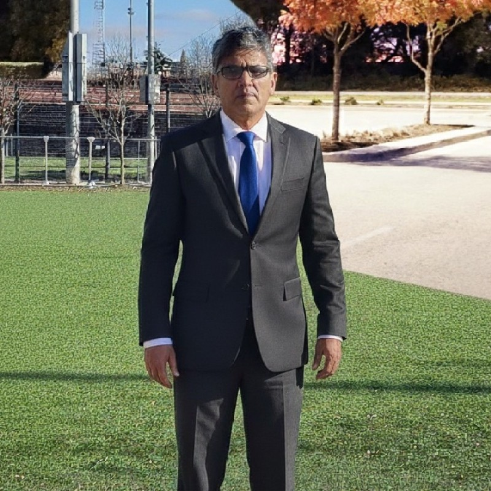

25+ years leading full-flight simulator operations and AI-driven reliability. Building voice-commanded AI decision support systems for aviation safety.
I'm a systems-driven technologist with a Doctor of Business Administration from SP Jain School of Global Management, where my research explored AI techniques for inventory optimization. My thesis is indexed on ProQuest, and I have research papers under review in respected journals. I hold an EMBA in Operations and Finance from SP Jain (ranked #23 globally by QS), a Master's in Software Engineering from BITS Pilani, and a Bachelor's in Electronics. My postgraduate work spans full-stack data science, Python, machine learning, Power BI, and core data science methodologies.
Over a decade in aviation and simulation, I've solved engineering challenges, supported embedded systems, and driven digital transformation. My academic work uses PLS-SEM structural modeling to quantify how AI decisions impact operational efficiency. I'm passionate about applied AI—developing supervised, unsupervised, and deep learning models, exploring Generative AI, and solving practical business problems with both structured and unstructured data.
I bring hands-on experience with C, C++, and C#, solid data structures and algorithms knowledge, and fluency in SQL and NoSQL (MongoDB) ecosystems. I'm open to collaborating on thoughtful, forward-looking projects in AI, simulation, or systems strategy where I can contribute meaningfully and continue growing.
Multi-document Agentic Decision Support System (MADSS) validated with 300+ aviation professionals. Explore all research, projects, and publications in the Research Hub.
Open to research collaborations, speaking engagements, and consulting